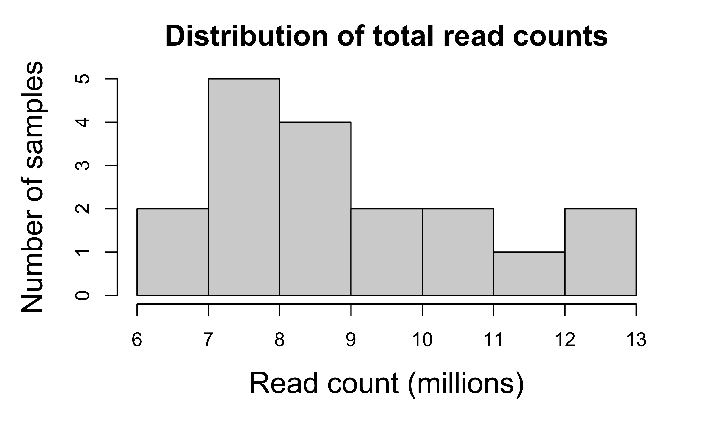
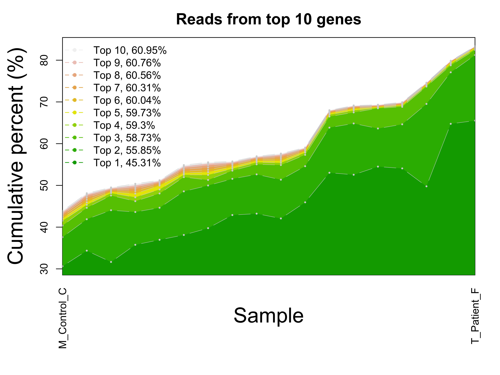
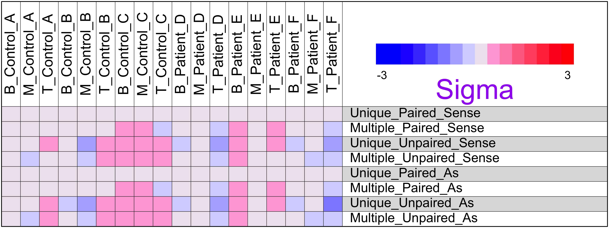
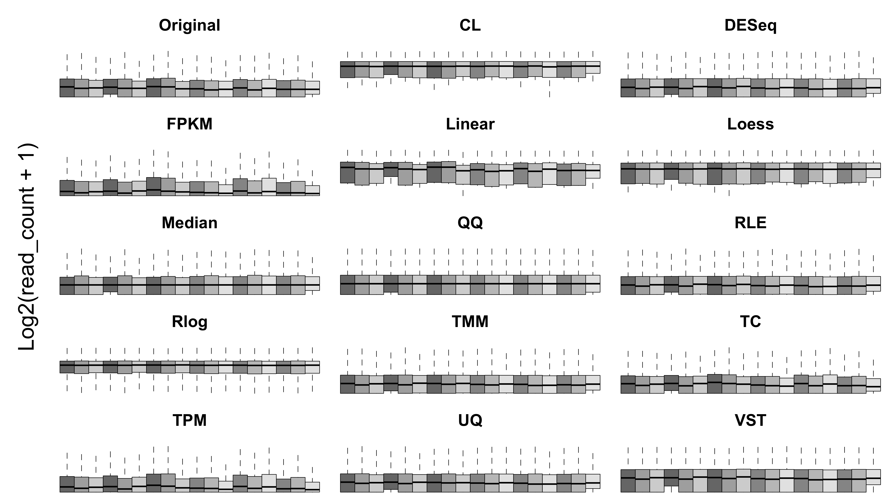
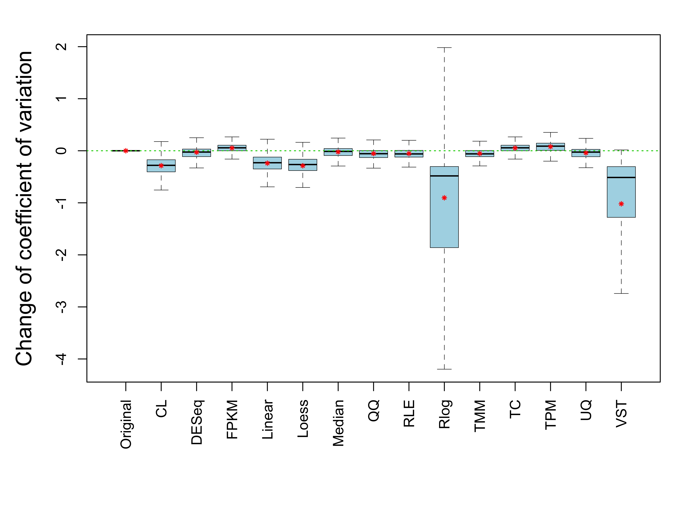
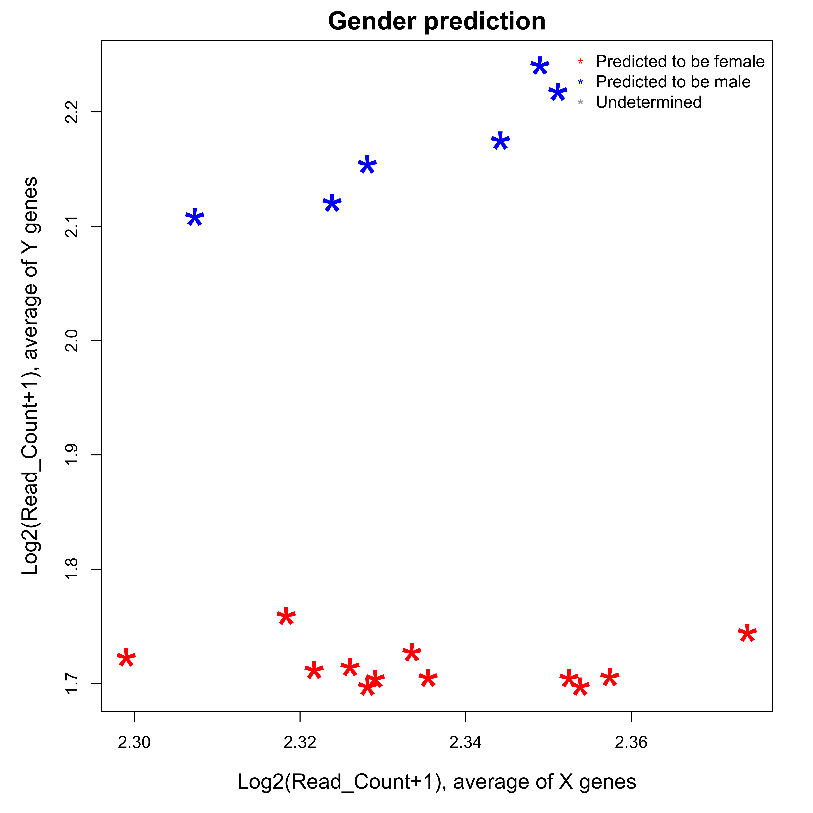
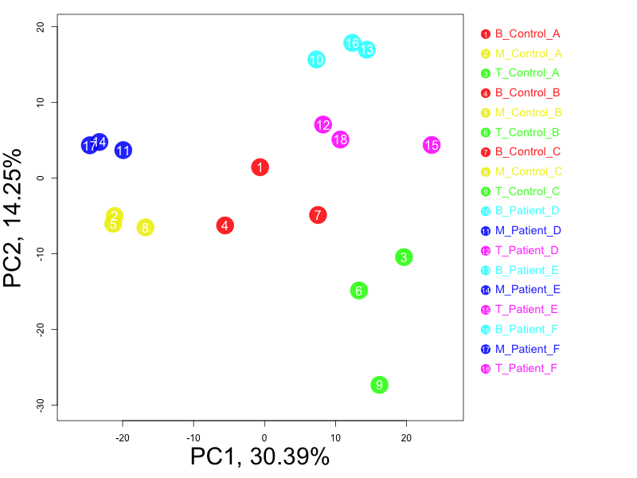
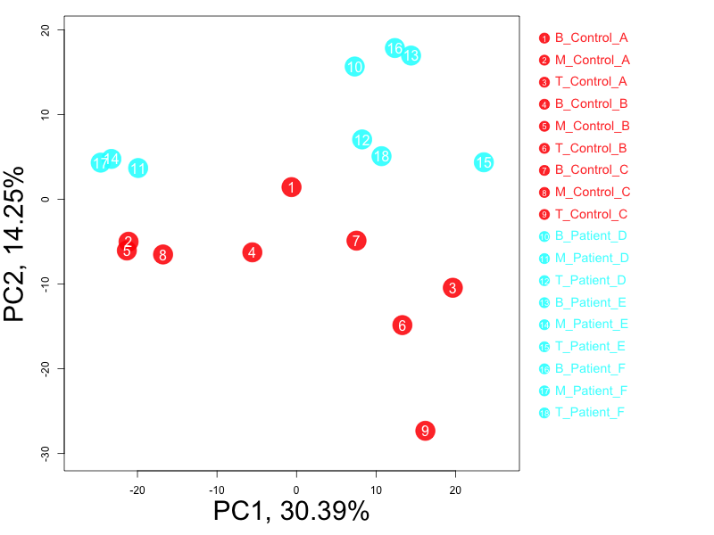

Analysis of RNA-seq samples using read count matrix
Jim Zhang
2018-07-02
Introduction This procedure analyzes the RNA-seq data of multiple samples for quality control purpose. It uses inputs such as gene-level read counts provided in one or multiple integer matrixes using the gene-level read counts, corresponding to different types of read-gene mapping, such as unique vs. multiple mapping and mapping to sense vs. antisense strands. The following steps are included in this analysis:
- Summary statistics: the read count data is summarized by sample, gene and mapping type.
- Dispersion and normalization: different normalization methods are compared based on between-sample variance of all genes before and after normalization.
- Sample analysis: X/Y genes are used to predict sample gender; and autosomal genes are used for unsupervised sample clustering.
1 Description
1.1 Project
Transcriptome in immune cells of control-patient samples
1.2 Data
Rna-seq data was generated from of 3 types of immune cells of 3 controls and 3 patients. Raw data was processed to get gene-level read counts.
2 Summary statistics
- Number of samples: 18
- Number of genes: 25,207
- Average number of total reads per gene: 6328.8
- Average number of total reads per sample: 8,862,836
2.1 Read count by sample
The total read count per sample is the sum of sequence reads of one sample mapped to all genes. Inconsistency of total reads between samples might suggest data quality issues and affect downstream analysis. For example, low total read count could be caused by high level of RNA degradation or high rate of sequencing errors. Shapiro-Wilk normality test shows that the total read counts of this data set is normally distributed (p = 0.21). Samples with extreme total read counts comparing to the others are listed below:
- Samples with extremly low read count: none
- Samples with extremly high read count: none

Figure 1. Distribution of total read counts of all samples. Total read count per sample (millions):
## Min. 1st Qu. Median Mean 3rd Qu. Max.
## 6.446 7.491 8.600 8.863 10.050 12.3702.2 Read count by gene
Due to the variability of gene length and expression level, it is expected that a large portion of the sequence reads are mapped to a small number of genes. At the same time, a large portion of the genes will have no or few reads mapped to them, making them unsuitable for statistical analysis. The distribution of read counts across genes and the consistency of such distribution between samples also provide information about RNA-seq data quality. In this data set,
- 10.52% genes have no reads mapped to them in any sample.
- 35.27% genes have 1 or less read mapped to them per sample.
- 48.29% genes have 5 or less reads mapped to them per sample.

Figure 2. The total read count of all samples mapped to each gene is used to sort genes from high to low. The cumulative percent of top genes is plotted along gene ranking.

Figure 3. The cumulative read counts of top 10 genes and the percent of total reads by these genes are calculated for each sample. Samples are ordered by the percents from low to high on the x-axis in this figure. The 2 samples with the lowest and the highest cumulative percents are labeled. The cumulative percents of all samples are then compared to each other to identify samples with extremely lower or higher percents than the other samples:
- Samples with extremely low percent of reads from top 10 genes: none
- Samples with extremely high percent of reads from top 10 genes: none
2.3 Read count by mapping type
The read-to-gene mapping could be complicated by at least 3 conditions corresponding to 8 mapping types:
- Whether the read is mapped to one and only one gene or multiple genes: unique vs. multiple
- Whether both ends of paired end reads are mapped to the same gene or only one end is mapped: paired vs. unpaired
- Whether the read is mapped to the sense strand or antisense strand of a gene: sense vs. antisense
This analysis accepts multiple matching matrixes of read counts corresponding to different mapping types. By default, the first matrix corresponds to the most common mapping type and will be used for all the other analyses in this report. In this section, however, read counts of different mapping types are summarized and compared to each other when multiple matrixes are provided.

Figure 4. Total mapped reads of all samples are split by mapping types, such as unique vs. multiple, paired vs. unpaired, and sense vs. antisense. Among the 8 mapping type(s),
- The most common mapping type is Unique_Paired_As (48.4133% of total mapped reads)
- The least common mapping type is Multiple_Unpaired_As, (0.065% of total mapped reads)
When the gene-level read counts of two mapping types are strongly correlated to each other, they can be combined to increase total read counts and hence statistical power of data analysis. Negative or lack of correlation between mapping types might also provide useful information.
Figure 5. The mapping type has the strongest correlation to the first and most common mapping type is identified based on Spearman’s correlation coefficients. The gene-level read counts of both mapping types are plotted in this figure. Click here to view correlation coefficients between all pairs of mapping types.
By comparing read counts of different mapping types to each other, the ratios can be compared between samples for consistency. A sample might have quality issue if it has reads of a mapping type much less or more than the other samples.

Figure 6. The relative frequecy of mapping types are calculated for each sample, using the first read count matrix as reference. The frequency of each mapping type are normalized across all samples (Mean = 0 and SD = 1.0). This figure shows the normalized frequency of each mapping type in each sample (red = high). - Mapping type Multiple_Unpaired_Sense has the most “abnormally” high relative frequency (# of standard deviations = 0.42) in sample T_Patient_F, B_Control_C. - Mapping type Unique_Unpaired_As has the most “abnormally” low relative frequency (# of standard deviations = -1) in sample T_Patient_F.
3 Dispersion and normalization
Gene-specific dispersion of RNA-seq read counts is commonly used to evaluate between-sample variance of a data set. Here, the dispersion is estimated by the overall pattern of coefficient of variation (standard deviation devided by average read count) of all genes.

Figure 7. Left: the distribution of average gene expression level (read count divided by gene length). Right: the dispersion of gene expression level between samples, measured as the coefficient of variation. Usually, genes with lower expression will have larger dispersion on average.
There are many ways to normalize RNA-seq data to remove systematic bias between samples, usually based on the assumption that all the samples have the same global distribution. The following analysis performs several different normalization methods and evaluate their impact on data dispersion:
- Original: The un-normalized gene-level read counts.
- Total_Count: Rescale data so all the samples have the same total read count.
- Median: Rescale data so all the samples have the same median read count.
- Quantile_Quantile: Make all the samples have exactly the same distribution.
- Upper_Quantile: Rescale data so all the samples have the same upper quantile read count.
- Trimmed_Mean: The “weighted trimmed mean of M-values” method implemented by the edgeR package.
- Relative_Log: The “relative log expression” method implemented by the edgeR package.
- DESeq: The normalization method of the DESeq package.
- FPKM: Fragments Per Kilobase of transcript per Million mapped reads.
- TPM: Transcript per Million mapped reads.
- Loess: Make all the samples have the similar distribution by fitting them to same Loess distribution.
- Cyclic_Loess: The “cyclic loess” method implemented by the limma package.
Check this paper for detailed comparison of normalization methods, and this function for R code of these normalization methods.

Figure 8. Each panel corresponds to a normalization method, including the boxplots of all samples. Samples are colored by their Group.

Figure 9. Each boxplot corresponds to a normalization method and the overall distribution of change in coefficient of variation of all genes. The means of all genes are labeled as the read stars. Click here to view the table of coefficients of variation of all genes.
Table 1. Summary of coefficient of variation (CV) from each normalization method. The columns are 1) average CV of all genes; 2) correlation of CV between the original read counts and normalized read counts of all genes; 3) the number of gene with decreased CV; 4) the number of genes with increased CV; and 5) the ratio of decreased to increased genes.
| Method | Mean | Change(%) | Corr2Original | Num_Decrease | Num_Increase | Decrease/Increase | |
|---|---|---|---|---|---|---|---|
| Original | Original | 1.1953 | 0.0000 | 1.0000 | 0 | 0 | NaN |
| CL | CL | 0.9093 | -23.9246 | 0.9700 | 20544 | 2010 | 10.22 |
| DESeq | DESeq | 1.1670 | -2.3660 | 0.9900 | 14207 | 8032 | 1.77 |
| FPKM | FPKM | 1.2474 | 4.3598 | 1.0000 | 5253 | 16590 | 0.32 |
| Linear | Linear | 0.9567 | -19.9642 | 0.9800 | 19647 | 2907 | 6.76 |
| Loess | Loess | 0.9071 | -24.1097 | 0.9800 | 20680 | 1874 | 11.04 |
| Median | Median | 1.1731 | -1.8580 | 0.9900 | 13328 | 8561 | 1.56 |
| 1.1405 | -4.5875 | 0.9900 | 15883 | 5969 | 2.66 | ||
| RLE | RLE | 1.1418 | -4.4743 | 1.0000 | 16415 | 6139 | 2.67 |
| Rlog | Rlog | 0.2918 | -75.5911 | -0.0034 | 22084 | 470 | 46.99 |
| TMM | TMM | 1.1421 | -4.4503 | 1.0000 | 16538 | 6016 | 2.75 |
| TC | TC | 1.2474 | 4.3598 | 1.0000 | 5372 | 16591 | 0.32 |
| TPM | TPM | 1.2744 | 6.6166 | 1.0000 | 4349 | 17477 | 0.25 |
| UQ | UQ | 1.1544 | -3.4250 | 1.0000 | 13455 | 7861 | 1.71 |
| VST | VST | 0.1757 | -85.3030 | 0.4800 | 22551 | 3 | 7517.00 |
4 Sample analysis
This section uses read count data to perform several sample-level analyses. The results can be used to identify potential mislabeling, outlier, confounding variable, etc. Read counts normalized by the Loess method are used for all analyses in this section.
4.1 Gender prediction
When enough genes on X and Y chromosomes have detectable expression, these genes can be used to predict the gender of samples. In case the gender information is already available, the predicted gender can be used to identify potential mislabeling.

Figure 10. The average of Log2(Read Count+1) is calculated for X and Y chromosomes when there are at least 5 genes having detectable expression. The averages of each sample are plotted in this figure as X and Y axes. The averages of each chromosome are used separately to cluster samples using the pamk {fpc} function. If the optimal number of clusters is 2 for both chromosomes, gender prediction will be made, and the samples having predicted gender agreed byt the two chromosomes will be labeled with red (female) or blue (male). Click here to veiw the full table of gender prediction.
4.2 Hierarchical clustering
Hierarchical clustering groups samples based on their glabal correlation of all genes. It is a iterative procedure that merges two most similar samples/groups at each step.
Figure 11. Hierarchical clustering of samples using all autosomal genes. Normalized read counts are log2-transformed before clustering. The vertical position of the common node of two samples indicates their similarity (lower = more similar).
4.3 Principal components analysis
Principal components analysis
4.3.1 Group

4.3.2 Cell

4.3.3 Disease

4.3.4 Donor

Figure 12. PCA is performed using all autosomal genes after read counts are log2-transformed. The same plot is made in multiple tabs while samples are color-coded based on known sample features.
5 Appendix
Check out the RoCA home page for more information.
5.1 Reproduce this report
To reproduce this report:
Find the data analysis template you want to use and an example of its pairing YAML file here and download the YAML example to your working directory
To generate a new report using your own input data and parameter, edit the following items in the YAML file:
- output : where you want to put the output files
- home : the URL if you have a home page for your project
- analyst : your name
- description : background information about your project, analysis, etc.
- input : where are your input data, read instruction for preparing them
- parameter : parameters for this analysis; read instruction about how to prepare input data
- Run the code below within R Console or RStudio, preferablly with a new R session:
if (!require(devtools)) { install.packages('devtools'); require(devtools); }
if (!require(RCurl)) { install.packages('RCurl'); require(RCurl); }
if (!require(RoCA)) { install_github('zhezhangsh/RoCAR'); require(RoCA); }
CreateReport(filename.yaml); # filename.yaml is the YAML file you just downloaded and edited for your analysisIf there is no complaint, go to the output folder and open the index.html file to view report.
5.2 Session information
## R version 3.3.3 (2017-03-06)
## Platform: x86_64-apple-darwin13.4.0 (64-bit)
## Running under: OS X Yosemite 10.10.5
##
## locale:
## [1] en_US.UTF-8/en_US.UTF-8/en_US.UTF-8/C/en_US.UTF-8/en_US.UTF-8
##
## attached base packages:
## [1] parallel stats4 stats graphics grDevices utils datasets
## [8] methods base
##
## other attached packages:
## [1] edgeR_3.16.5 DESeq2_1.14.1
## [3] SummarizedExperiment_1.4.0 Biobase_2.34.0
## [5] limma_3.30.13 gplots_3.0.1
## [7] DEGandMore_0.0.0.9000 snow_0.4-2
## [9] awsomics_0.0.0.9000 Rnaseq_0.0.0.9000
## [11] GenomicRanges_1.26.4 GenomeInfoDb_1.10.3
## [13] IRanges_2.8.2 S4Vectors_0.12.2
## [15] BiocGenerics_0.20.0 fpc_2.1-10
## [17] vioplot_0.2 sm_2.2-5.4
## [19] htmlwidgets_0.9 DT_0.2
## [21] yaml_2.1.16 knitr_1.18
## [23] rmarkdown_1.10.3 RoCA_0.0.0.9000
## [25] RCurl_1.95-4.9 bitops_1.0-6
## [27] devtools_1.13.4 kableExtra_0.9.0
##
## loaded via a namespace (and not attached):
## [1] bit64_0.9-7 RColorBrewer_1.1-2 httr_1.3.1
## [4] rprojroot_1.3-2 prabclus_2.2-6 tools_3.3.3
## [7] backports_1.1.2 R6_2.2.2 rpart_4.1-10
## [10] KernSmooth_2.23-15 DBI_0.7 Hmisc_4.1-0
## [13] lazyeval_0.2.1 colorspace_1.3-2 trimcluster_0.1-2
## [16] nnet_7.3-12 withr_2.1.1 gridExtra_2.3
## [19] bit_1.1-12 rvest_0.3.2 htmlTable_1.11.1
## [22] xml2_1.1.1 checkmate_1.8.5 diptest_0.75-7
## [25] caTools_1.17.1 scales_0.5.0 DEoptimR_1.0-8
## [28] mvtnorm_1.0-6 robustbase_0.92-8 genefilter_1.56.0
## [31] readr_1.1.1 stringr_1.2.0 digest_0.6.13
## [34] foreign_0.8-67 XVector_0.14.1 base64enc_0.1-3
## [37] pkgconfig_2.0.1 htmltools_0.3.6 highr_0.6
## [40] rlang_0.1.6 RSQLite_2.0 rstudioapi_0.7
## [43] jsonlite_1.5 mclust_5.4 BiocParallel_1.8.2
## [46] gtools_3.5.0 acepack_1.4.1 magrittr_1.5
## [49] modeltools_0.2-21 Formula_1.2-2 Matrix_1.2-8
## [52] Rcpp_0.12.14 munsell_0.4.3 stringi_1.1.6
## [55] MASS_7.3-45 zlibbioc_1.20.0 flexmix_2.3-14
## [58] plyr_1.8.4 blob_1.1.0 grid_3.3.3
## [61] gdata_2.18.0 lattice_0.20-34 splines_3.3.3
## [64] annotate_1.52.1 hms_0.4.0 locfit_1.5-9.1
## [67] pillar_1.1.0 geneplotter_1.52.0 XML_3.98-1.9
## [70] evaluate_0.10.1 latticeExtra_0.6-28 data.table_1.10.4-3
## [73] gtable_0.2.0 kernlab_0.9-25 ggplot2_2.2.1
## [76] xtable_1.8-2 class_7.3-14 survival_2.40-1
## [79] viridisLite_0.2.0 tibble_1.4.2 AnnotationDbi_1.36.2
## [82] memoise_1.1.0 cluster_2.0.5END OF DOCUMENT